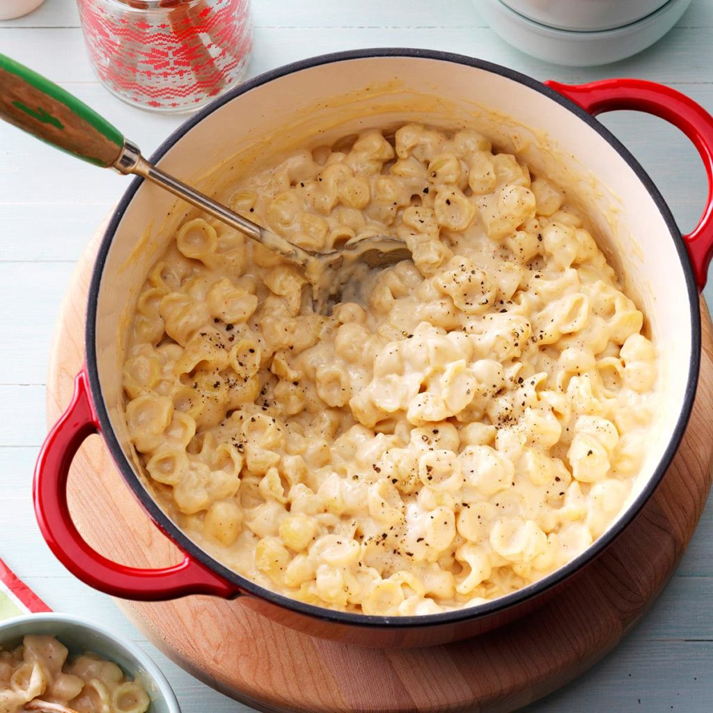

White Cheddar Mac & Cheese
Ingredients
1 package (16 ounces) small pasta shells
1/2 cup butter, cubed
1/2 cup all-purpose flour
1/2 teaspoon onion powder
1/2 teaspoon ground chipotle pepper
1/2 teaspoon pepper
1/4 teaspoon salt
4 cups 2% milk
2 cups shredded sharp white cheddar cheese
2 cups shredded Manchego or additional white cheddar cheese
Directions
- In a 6-qt. stockpot, cook pasta according to package directions. Drain; return to pot.
- Meanwhile, in a large saucepan, melt butter over medium heat. Stir in flour and seasonings until smooth; gradually whisk in milk. Bring to a boil, stirring constantly; cook and stir until thickened, 6-8 minutes. Remove from heat; stir in cheeses until melted. Add to pasta; toss to coat.
Nutrition Facts
1 cup: 650 calories, 35g fat (22g saturated fat), 101mg cholesterol, 607mg sodium, 55g carbohydrate (8g sugars, 2g fiber), 27g protein.
Total Time
Prep/Total Time: 25 min.